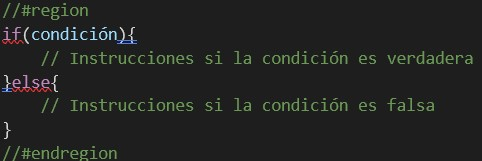
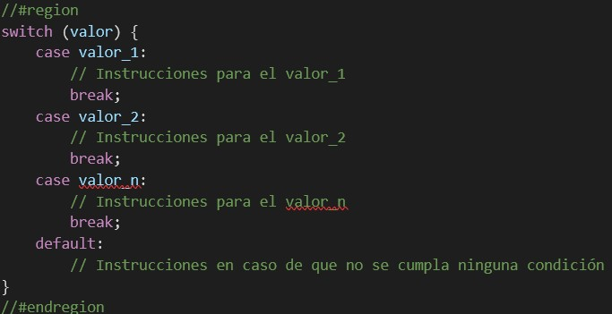
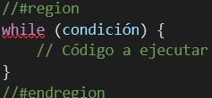
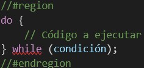
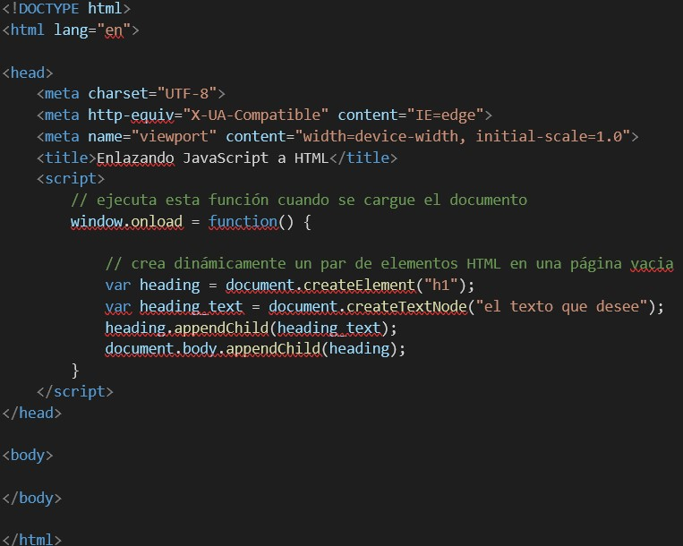

Investigación de JavaScript
¿Qué es JavaScript?
Para comenzar a hablar de JavaScript, tenemos que comenzar con una breve introducción a este. JavaScript es un lenguaje de programación que, mediante diferentes secuencias de comandos, nos posibilita tener una página web con la que los usuarios puedan interactuar cuando realicen acciones dentro del sitio, como, por ejemplo, al presionar un botón. Ya teniendo sabida esta base, podemos comenzar a hablar de JavaScript más en profundidad.
Versiones de JavaScript
JavaScript
- JavaScript 1.0
- JavaScript 1.1
- JavaScript 1.2
- JavaScript 1.3
- JavaScript 1.4
- JavaScript 1.5
- JavaScript 1.6
- JavaScript 1.7
ECMAScript
- ECMAScript 6 (ES6)
- ECMAScript 7 (ES7)
- ECMAScript 8 (ES8)
- ECMAScript 9 (ES9)
- ECMAScript 10 (ES10)
- ECMAScript 11 (ES11)
- ECMAScript 12 (ES12)
- ECMAScript 13 (ES13)
Maneras de integrar JS a HTML
Tenemos 3 formas de integrar JavaScript a HTML para que los códigos trabajen juntos y todo usando la misma etiqueta, pero en diferentes lugares. La etiqueta "script" nos ayuda a vincular el archivo JavaScript con el documento HTML y, dependiendo del lugar en donde se coloque y se vaya a trabajar, va a depender como nos vamos a organizar para programar.
Script en head

En esta forma, solamente basta con colocar la etiqueta script en el head y comenzar a programar en ella nuestro código JS para implementarlo en el HTML.
Script y scr en head
Otra manera alternativa y más recomendada, si no queremos agregar el código JS en el documento HTML, es crear un archivo aparte con el nombre “script.js” y luego enlanzarlo dentro de la etiqueta head mediante la etiqueta script, agregando el atributo “src”, donde, entre comillas, ponemos el nombre del archivo.
Script en body

Con la etiqueta script en body, la función es la misma que si la pusiéramos en head, ya que estaríamos programando el código JS dentro de la etiqueta en el body.
Manejo de variables, tipos de datos y expresiones regulares en JS
Hay tres formas distintas de declarar variables en JS.
Tenemos var, que nos ayuda a darle nombre a un valor y así después usarlo para distintos fines, como la reutilización de código, registrar los valores o hasta actualizarlo luego cuando queramos, que es una de las características que diferencian a var de const.
Con const lo que hacemos es asignarle un nombre a un valor constante, lo que quiere decir que el valor de la variable no puede actualizarse y es muy importante que sea inicializada para poder utilizarse correctamente sin que nos aparezca un error.
Cuando usamos let para definir nuestras variables no estamos haciendo muy diferente que con var, solo que let es una versión más actualizada que var en JS.
Tipo de variables en JS
- Undefined: el tipo de dato undefined nos indica que a la variable no se asignó un valor.
- Number: uno de los dos tipos numéricos de los que vamos a estar hablando junto BigInt. Number es un valor numérico que viene en un formato binario de 64 bits.
- Symbol: cuando nos referimos a symbol, estamos hablando de un valor tanto único como inmutable.
- Boolean: un tipo de dato boolean significa una entidad lógica, la cual consta de dos valores opuestos = “true” y “false”.
- String: string nos indica que el de dato va a ser textual.
- BigInt: como ya mencionado antes, bigint es un tipo de dato numérico que nos posibilita mostrar números enteros y con el cual podemos tanto operar como almacenar con confianza en números enteros que hasta sobrepasen el límite seguro de números enteros para number.
- Null: con null solo tenemos un valor, el cual, justamente, es null, que quiere decir nulo o vacío.
Expresiones Regulares en JS
En JavaScript tenemos las llamadas expresiones regulares, las cuales son una especie de patron que se usa para poder hacer que distintas combinaciones de caracteres en cadenas puedan coincidir y también pueden ser consideradas objetos.
Para crear una expresión regular en JS tenemos dos formar de llevarlo a cabo, ya sea mediante una expresión regular literal o a través de la función constructora del objeto “RedExp”.
Expresión literal:
RegExp

Declarar funciones en JS
Una función en JavaScript es considerada un conjunto de sentencias o un procedimiento cuyo fin es llevar a cabo una tarea. Para declarar una función contamos con distintas maneras, de las cuales hoy vamos a ver 6 mostrando ejemplos visuales a la vez.
- Function declaration: podría ser considerada la forma de declaración más fácil de usar, ya que se crea utilizando la palabra “function”, luego de el nombre asignado a la función, una lista de parámetros y abrir y cerrar las llaves.
- Function expression: con function expression, la sintaxis a usar es parecida a la que usamos en la forma anterior, con la diferencia de que la función, en este caso, no va a comenzar con “function”, sino que podemos guardar la función en una variable.
- Arrow function: en arrow function la sintaxis cambia drasticamente, ya que hay ciertas reglas con arrow function que las otras formas no tienen, como el hecho de no crea su contexto propio como function declaration y function expression y también que son anónimas. Con esta forma lo que hacemos es definir primero los parámetros entre paréntesis, luego colocar el símbolo “=>” y por último abrir y cerrar llaves.
- Function constructor: es considerada una de las formas menos comunes de declarar funciones en JavaScript. Con esta forma es posible crear una variable cuya tarea sea invocar a un objeto function y, cuando sea invocado, poder enviarle todos los argumentos deseados.
- IIFE: esta forma es comúnmente utilizada cuando, en vez de llamar a una misma función varias veces en un mismo o distinto código, solo queremos llamar a la función una sola vez para poder adquirir un resultado. Así, IIFE es una forma que no solo se ejecuta de forma inmediata, sino que también no es accesible de manera posterior. El primer paso para crear esta función es en un operador de agrupación y luego colocar paréntesis.
- Shorthand method definition: esta es la forma la cual es posible utilizar como un método al momento de la declaración de un objeto o en las clases de ECMASript6. Para llevarla a cabo, primero hay que darle un nombre de función, después una lista de parámetros que tienen que ir entre paréntesis y, por supuesto, abrir y cerrar las llaves.
- Generator function: Con generator function poseemos una característica única del mismo, siendo que, a diferencia de todas las otras formas mencionadas anteriormente, ésta nos posibilita detener la función en un punto adentro de todo el conjunto de instrucciones y después poder volver de forma posterior la ejecución desde el punto en el que nos detuvimos. Para usar esta forma, la sintaxis no cambia mucho de “function declaration” y “function expression”.
Operadores de conversión en JS
- ToString: utilizado, como su nombre lo indica, como una conversión al tipo de dato String cuando se necesite el formato de texto para un valor.
- ToNumber: se usa cuando queremos convertir de forma numérica, suele pasar de manera automática en funciones tanto matemáticas como en expresiones también.
- ToBoolean: suele usarse o suceder en operaciones lógicas, aunque otra forma de hacerlo de la misma manera es explícitamente llamando a función “Boolean(value)”.
Estructuras de control en JS
En JavaScript contamos con distintas estructuras de control que nos sirven en cualquier lenguaje de programación, cuya función es poder controlar la manera en la que circulan nuestras operaciones mientras el programa esté en marcha. Digamos que, sin estas estructuras, la forma de circular quedaría fija, haciendo lo mismo una y otra vez.
If/Else
Con if y else lo que estamos definiendo es que, si una condición se cumple, se ejecutará la próxima línea de código, mientras que, si la condición no se cumple, hay otra oportunidad de ejecutar la o las líneas de código que estén dentro del else.
Switch
Hacemos uso de switch cuando tenemos varias instrucciones a completar dependiendo de otras varias condiciones.
For
For es un bucle o repetitiva que nos deja ejecutar distintas instrucciones una predeterminada cantidad de veces.

While
While, al igual que for, es una repetitiva, con la diferencia de que while lo que nos posibilita es solo hacer cumplir el código una vez que la condición que hayamos puesto entre paréntesis se cumpla.
Do while
La repetitiva do while, aunque pueda sonar parecida al while, su diferencia con éste es que, de forma obligatoria puede ser ejecutado solo una vez y solo después de eso pueden volver a ejecutarse si las condicionales se cumplen.
Objeto Dom en JS
El objeto Dom en JavaScript o modelo de objeto de documento nos sirve como interfaz de programación ya sea para documentos HTML o XML. Programando mediante éste, nos podemos facilitar el realizar la representación estructurada del documento y, aparte, también define la forma en la que los programas van a poder ser permitidos, como resultado poder modificar desde su estilo hasta su contenido y hasta su estructura. En resumen, podemos decir que Dom llamamos a lo que nos otorga la representación del archivo o documento a forma de grupo de nodos y objetos estructurados, los cuales contienen tanto propiedades como métodos. Es muy importante a la hora de enlazar los sitios web a los scripts o lenguajes de programación que queramos agregarles. Una manera fácil de mostrar como funciona es mediante código comentado:
Object Map en JS
Object Map en JavaScript utiliza pares del tipo “llave-valor” y es capaz de recordar el orden de implantación original de las llaves, pudiendo mantenerlo. Cabe aclarar que cualquier valor, ya sean objetos o valores primitivos, puede ser usado como una llave o como un valor. En lo que principalmente nos ayuda object map es a gestionar distintos conjuntos de datos en diferentes y variadas circunstancias en forma de pares.
Eventos de JS
- Onblur: cuando un elemento pierde el foco.
- Onchange: cuando un elemento se modificó.
- Onclick: cuando se pulsa y se suelta el ratón.
- Ondclick: cuando se pulsa el ratón dos veces consecutivas.
- Onfocus: cuando un elemento vuelve a obtener el foco.
- Onkeydown: cuando se pulsa una tecla y no se suelta.
- Onkeypress: cuando se pulsa una tecla.
- Onkeyup: cuando se suelta una tecla pulsada
- Onload: cuando una página se carga por completo.
- Onmousedown: cuando se pulsa un botón del ratón y no se suelta.
- Onmousemove: cuando se mueve el ratón.
- Onmouseout: cuando el ratón “no toca” el elemento.
- Onmouseover: cuando el ratón “toca” el elemento.
- Onmouseup: cuando se suelta el botón del ratón.
- Onreset: cuando se inicializa el formulario.
- Onresize: cuando se modifica el tamaño de la ventana.
- Onselect: cuando se selecciona un texto.
- Onsubmit: cuando se envía un formulario.
- Onunload: cuando se abandona la página.
Formularios en JS
Obtener datos del input
Para obtener datos del input a la hora de hacer un formulario y enviarlo tenemos tres diferentes formas.
- documento.getElementById(id_name): se utiliza para seleccionar el elemento de entrada Dom mediante el id que previamente le pusimos para reconocerlo, de forma sencilla podemos utilizar la propiedad value.
- document.getElementsByClassName(‘class_name’): De la misma manera que con la forma mencionada anteriormente, document.getElementByClassName(‘class_name’), para seleccionar el elemento de entrada Dom, en lugar de un id, utilizamos una clase asignada anteriormente al elemento, de forma que, si tenemos muchos elementos con el mismo nombre de clase, lo que va a pasar es que nos va a ser devuelto una lista o array que contenga con las entradas Dom, lo cual puede ser resuelto si agregamos “[index_number].value” al final.
- document.querySelector(‘selector’): con document.querySelector(‘selector’), justamente como su nombre lo dice, vamos a seleccionar los elementos con diferentes selectores utilizados en CSS, ya sea por id, clase, etiqueta, entre muchos.
Validar datos del input
Una parte esencial a la hora de crear formularios es que los datos puedan ser validados y para esto, es necesario tener en cuenta a los scripts, habitualmente llevados a cabo en JavaScript, donde se fijan condiciones a cumplirse cuando el usuario envíe el formulario con sus datos. En la etiqueta form, donde se crea un formulario contamos con el manejador de eventos “onsubmit”, desde el que se puede llevar a cabo llamar a la función “validar ()”, la se muestra de manera seguida y cuyo objetivo es poder confirmar que en los campos que definimos, el usuario haya ingresado los datos correspondientes.